Across the High Atlas: Azilal to Rich
A journey through remote mountains, Amazigh villages and the hidden landscapes of Morocco's High Atlas.
Five days from the green valleys of Azilal to the eastern edge of the High Atlas at Rich — via Imilchil, the twin lakes of Isli and Tislit, the high village of Agoudal and the quiet commune of Amouguer. This is a traverse for travellers who want the Morocco between the famous places: mountain roads, lake walks, village bread, mint tea, and time.
What makes it special: this route was designed by our founders, Abdellah and Karim, across their own home villages and valleys — and to our knowledge, no other tour operator offers it. You travel it with the people who grew up on it.
- Day 1 · Azilal → Imilchil
- Day 2 · Imilchil lakes
- Day 3 · Imilchil → Agoudal
- Day 4 · Agoudal → Amouguer → Rich
- Day 5 · Rich
Route map
Out across the mountains from Marrakech to Rich, and back to Marrakech on the fastest paved corridor. Drag to pan, use the +/- controls to zoom, tap a numbered stop for details.
The lines show the corridor rather than every mountain bend; your driver follows the best passable road on the day. Agoudal's marker is approximate (high village beside the meteorite strewn field).
Why this journey is different
This is not a tour that rushes from one famous attraction to another. There is no Marrakech medina on this route, no Sahara dunes at the end of it. Instead, there is something rarer: a continuous crossing of the High Atlas from west to east, through country that most itineraries simply drive around.
The route connects genuinely different mountain environments and communities. It begins in Azilal, capital of the M'Goun UNESCO Global Geopark, climbs to the high lakes plateau of Imilchil at over 2,100 metres, follows the Assif Melloul valley east to the high village of Agoudal, continues through the pastoral commune of Amouguer, and descends to Rich — where the High Atlas loosens its grip and the waters gather toward the Ziz and the pre-Saharan south.
Because this is real mountain country, conditions shape the journey. Seasons, weather and road works can change timings, and the itinerary is built to breathe: scenic stops are part of the plan, not interruptions to it, and your driver and local guides adjust the days as the mountains require. You travel slowly, walk often, eat where the villages eat, and arrive each evening somewhere you probably could not have found on your own.
And there is one more reason this journey exists only here. This is the home ground of Abrid Morocco's founders, Abdellah and Karim: the villages, valleys and mountain roads of this traverse are where they grew up. The route was built from their own knowledge — which doors to knock on, which tracks are passable in which month, whose table to join — not assembled from a catalogue. That is why you will not find this exact journey offered by any other operator, and why travelling it with us means travelling it with its people.
Highlights
- Crossing the Central High Atlas west to east — a rarely travelled traverse from Azilal to Rich, through the heart of the range rather than around it.
- Azilal, capital of the M'Goun UNESCO Global Geopark — the market town and geological gateway where the journey begins.
- Imilchil at 2,119 metres — high plateau town of the Aït Hdiddu, between lakes, pastures and the Assif Melloul valley.
- Lakes Isli and Tislit — the twin lakes of the Imilchil plateau: shore walks, a picnic lunch, photography and the stories the guides tell.
- Agoudal, high village in meteorite country — a remote settlement on the eastern road, beside the strewn field of the officially recognised Agoudal iron meteorite.
- Amouguer and the quiet eastern valleys — pastoral commune life, terraced fields and villages far from any tourist circuit.
- Rich and the Ziz watershed — the eastern exit of the High Atlas, where the upper Ziz gathers and turns south toward the gorges and the Tafilalt.
- The founders' home ground, offered only by us — a route designed by Abdellah and Karim through their own villages and valleys. To our knowledge, no other operator offers this traverse.
Day-by-day itinerary
Timings are indicative — mountain roads set the pace, and your driver adjusts stops, walks and viewpoints to the day's conditions.
Azilal → Imilchil
The crossing beginsMorning: Meet your driver in Azilal, capital of Azilal Province and of the M'Goun UNESCO Global Geopark. After a short orientation — the Geopark Museum quarter, the town's Amazigh market streets — depart east into the Central High Atlas.
Midday: Lunch in a village restaurant along the mountain road. The route climbs through Aït M'Hamed country: terraced valleys, walnut groves and high pastures, with stops at viewpoints as the road gains altitude.
Afternoon: Continue over the high passes toward the Imilchil plateau. The landscape opens into wide summer pastures dotted with sheepfolds. Arrive in Imilchil (2,119 m) in the late afternoon and settle into your mountain lodge.
Evening: Traditional dinner at the lodge, early night. The air is thin and the sky is wide — even in summer, evenings are cool.
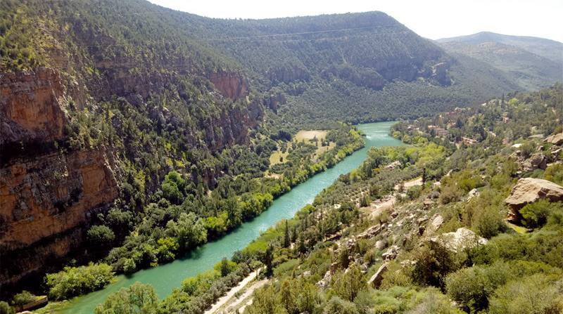
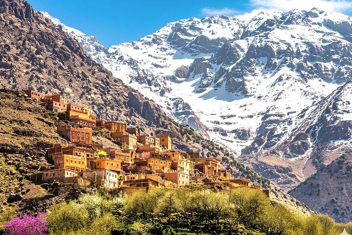
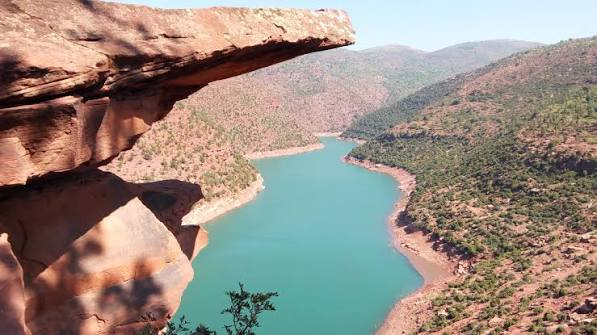
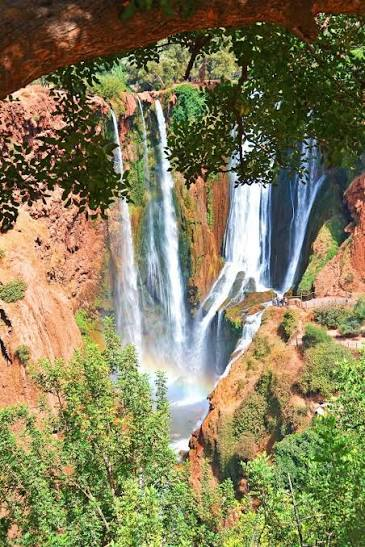
🏨 Accommodation
Mountain lodge in Imilchil (1 night)
🍽️ Meals
Dinner
✅ Included
Imilchil — Lakes Isli & Tislit
The twin lakesMorning: After breakfast, drive with a local guide to Lake Tislit, a few kilometres from Imilchil. Walk a stretch of its shoreline — the lake is shallow, ringed by pastures, and rich in birdlife in season.
Midday: Picnic lunch on the shores of Lake Tislit (included), prepared by your lodge. Rest, swim-free paddling at the water's edge, and photography: the light on the high plateau is at its clearest around midday.
Afternoon: Continue to Lake Isli, the larger and deeper of the two lakes, set about 9 km from Imilchil. Walk the shore track with your guide, who will share the local storytelling attached to the two lakes — the tale of the separated lovers, Isli the groom and Tislit the bride — as tradition, not history. If the day aligns with Imilchil's weekly Saturday souk, visit it instead in the morning before the lakes.
Evening: Return to the lodge. Traditional dinner, mint tea, and a second night at altitude.


🏨 Accommodation
Mountain lodge in Imilchil (1 night)
🍽️ Meals
Breakfast Picnic lunch Dinner
✅ Included
Imilchil → Agoudal
Assif Melloul valleyMorning: Depart Imilchil eastward, following the valley of the Assif Melloul — the "white river" that gives the region its shape. Stop for an easy guided walk into the Assif Melloul Gorges: about an hour on foot among cliffs, caves and valley gardens.
Midday: Lunch in a village auberge along the valley road — tajine, bread, seasonal salads. The road here is a high mountain track in places; progress is slow and the views are constant.
Afternoon: Continue to Agoudal, a high village on the eastern road. Your guide will explain what makes this ground unusual: the surrounding slopes are the strewn field of the Agoudal iron meteorite, an officially recognised fall whose fragments local people first collected and sold to travellers years before scientists confirmed it. Walk the village edge, its fields and irrigation channels, at the pace of the place.
Evening: Dinner and overnight in a village gîte in Agoudal. Nights here are quiet — and, at this altitude, cold outside summer.
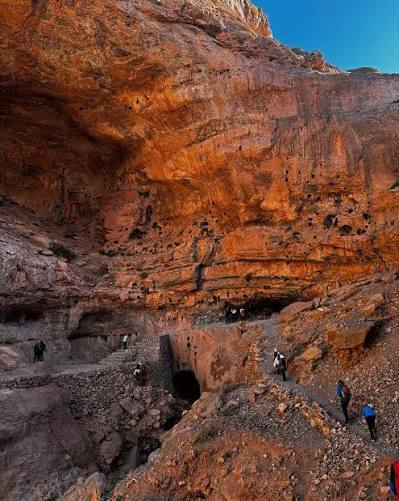
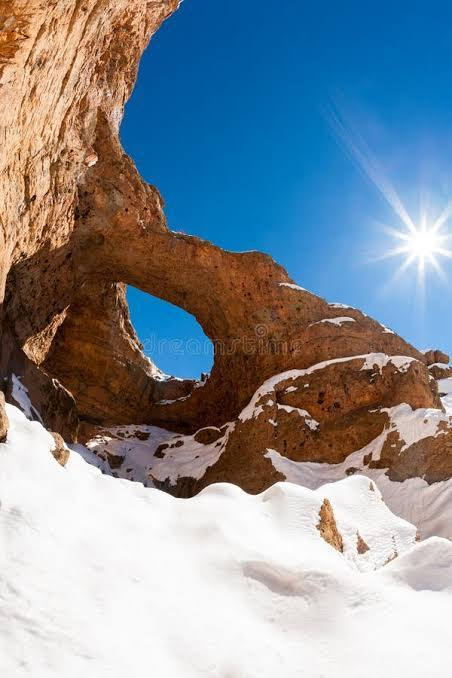
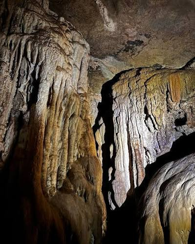
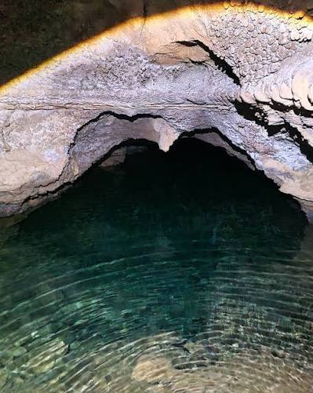
🏨 Accommodation
Village gîte in Agoudal (1 night)
🍽️ Meals
Breakfast Dinner
✅ Included
Agoudal → Amouguer → Rich
The eastern transitionMorning: Leave Agoudal as the High Atlas begins to change character: the peaks draw back, the plateaus widen, and the vegetation thins toward steppe. Drive through high pastoral country toward Amouguer.
Midday: Stop in the rural commune of Amouguer — a farming and herding community of Midelt Province far from any tourist route. Lunch in a local auberge; time to walk the village lanes, see the terraced plots and the communal irrigation channels, and drink tea where it is offered.
Afternoon: Descend toward Rich (Er-Rich), the market town where the High Atlas meets the upper Ziz watershed. The Ziz river gathers west of Rich before turning south to carve its gorges toward the Tafilalt — you are now at the eastern door of the mountains. Settle into your accommodation in Rich.
Evening: Dinner in Rich and overnight. A town evening after three nights of mountain quiet.
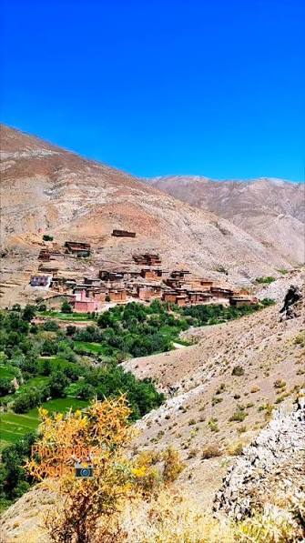
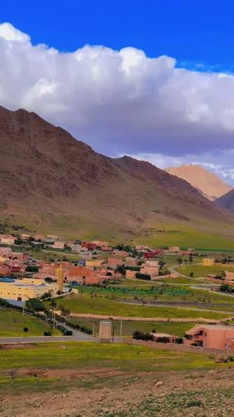

🏨 Accommodation
Hotel in Rich (1 night)
🍽️ Meals
Breakfast Dinner
✅ Included
Rich & the upper Ziz valley
End of journeyMorning: After breakfast, explore Rich's market streets with your driver — a working mountain town, not a showcase. Then drive a short loop along the upper Ziz: viewpoints over the river plain, the first palmeraies downstream, and the road south toward the Zaabal tunnel and the Ziz Gorges corridor (viewpoint stop; the full gorge descent is an optional extension, not part of this day).
Midday: Farewell lunch in Rich (at your own expense), and time for last photographs and purchases — dates, local honey and mountain herbs where available.
Afternoon: The journey ends in Rich. Onward connections — toward Midelt and Fes, or south toward Errachidia and the Sahara — can be arranged with Abrid Morocco on request.
Evening: End of services in Rich. Travellers continuing with us transfer to their next destination.
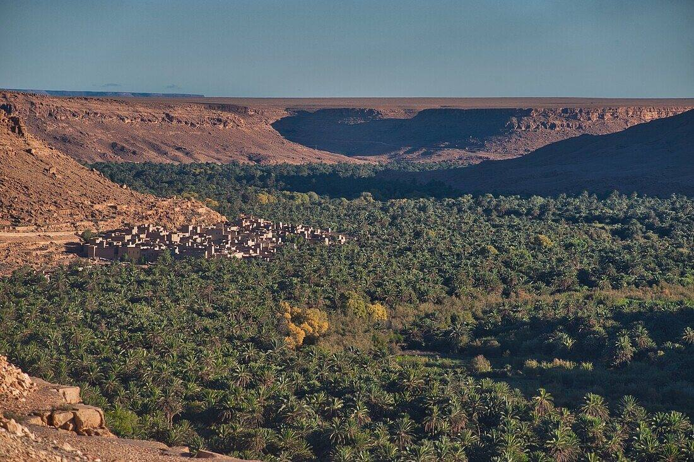
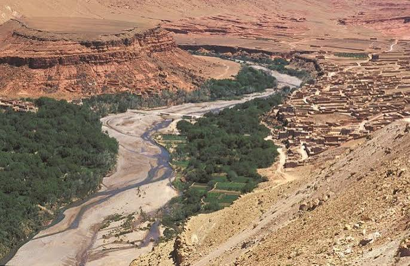
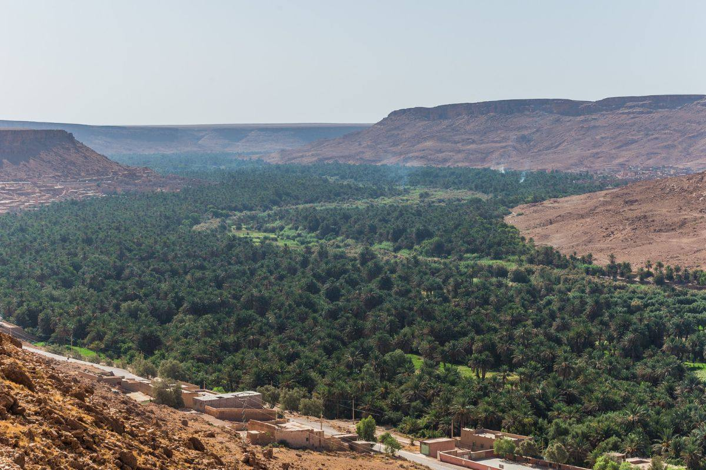
🏨 Accommodation
End of journey (onward stay on request)
🍽️ Meals
Breakfast
✅ Included
Experiences along the way
Included experiences
- Mountain and lakeshore walking — guided shore walks at lakes Tislit and Isli and an easy guided walk in the Assif Melloul Gorges. No technical hiking; steady footing required.
- Village visits — Azilal's market streets, Agoudal, Amouguer and Rich, with time to walk, observe and talk rather than just photograph.
- Weekly souk visit — when the itinerary aligns with a market day (Imilchil's souk is on Saturdays), the day is shaped around it.
- Picnic lunch by Lake Tislit — prepared by your lodge, eaten at the water's edge.
- Photography and nature observation — scheduled scenic stops throughout; your driver knows where the light falls. In season, the lakes plateau carries steppe birds and birds of prey.
- Food as encounter — lodge and gîte dinners, village auberge lunches, bread, mint tea: the meals are part of the route, not fuel stops.
Optional experiences (on request)
- Ascent of Bab N'Ouayad (2,804 m) with a certified mountain guide — a half-day summit above Imilchil with views over both lakes. Requires reasonable fitness and suitable weather; arranged with a local guide, not guaranteed in the base price.
- VTT / mountain biking between the lakes — only where bikes and support are actually available locally; ask in advance and we confirm or decline honestly.
- Moussem season travel — travelling during the Imilchil betrothal festival period (usually late August) is possible but accommodation is constrained and must be planned well ahead.
- Extra nights — in Imilchil, Agoudal or Rich, for slower walking days or rest.
- Ziz Gorges extension — continue south from Rich through the Zaabal tunnel toward the Ziz Gorges and Errachidia as a separate add-on.
Lakes Isli & Tislit
The two lakes sit on the high Imilchil plateau, inside the Haut Atlas Oriental National Park. Lake Isli lies about 9 km from Imilchil: at roughly 2.55 km² and 95 m deep it is counted among the largest and deepest natural lakes in North Africa. Lake Tislit lies a few kilometres to the west: smaller (about 1.3 km²) and shallow (around 16 m). Tislit has been listed as a protected Ramsar wetland since 2005.
Why they matter. Geologically, the lakes occupy a high syncline basin of Jurassic limestone country; despite early press reports linking them to the Agoudal meteorite finds some 20 km away, field studies have found no impact evidence and point to tectonic and karstic origins. Ecologically, they are rare permanent high-altitude water bodies — watering points for herds, habitat for wetland birds, and the green heart of the summer pastures. Culturally, they anchor the identity of the plateau: in local storytelling, Isli is the groom and Tislit the bride, two separated lovers whose tears formed the waters — a tale traditionally linked to the region's betrothal festival customs.
What travellers do there. Walk the shorelines with a local guide, picnic on the banks of Tislit, photograph the colour shifts of Isli through the afternoon, and watch herders bring animals to drink. Swimming is not part of the programme, and the lakes are working pastoral landscapes — flocks, fishermen where permitted, and quiet — rather than leisure beaches.
Seasons. The plateau is at its best from late spring to early autumn, when the lakes are full from snowmelt and the pastures are green. In winter the lakes can freeze at the edges, nights fall far below freezing, and access roads may close — which is why this journey runs in the milder months unless conditions clearly allow otherwise.
A note on the legend: the story of the lovers is local oral tradition retold by guides — it is storytelling, not documented history. We present it that way, and so should anyone who repeats it.
Amazigh culture along the route
This route passes through communities of the Central Atlas Tamazight-speaking world — including the Aït Hdiddu of the Imilchil area, part of the wider Aït Yafelman confederation of the eastern High Atlas. These are mountain societies built around transhumant herding, terraced barley and vegetable plots, communal pasture management (agdal), stone-and-earth architecture, and weekly souks that remain economic and social institutions rather than tourist events.
You will see it in the sheepfolds above Imilchil, the irrigation channels of Agoudal, the terraced lanes of Amouguer, and the market streets of Azilal and Rich. You will taste it in couscous, village bread and mountain dairy, and hear it in Tamazight — with Arabic and often French alongside — wherever tea is poured.
Amazigh culture here is not a performance arranged for visitors, and we do not present it as one. Encounters happen through normal travel — meals, markets, walks, stays — with the basic courtesies observed: greet people, ask before photographing anyone, accept what is offered graciously, dress modestly in villages, and let your guide handle introductions. Respect given is respect returned; that is the whole method.
Food on the route
Mountain cooking is simple, filling and seasonal. Expect tajines of lamb, beef or vegetables slow-cooked over embers; couscous — the Amazigh staple, served on Fridays and feast days in many households; village bread baked in communal or household ovens; eggs, olives and preserved meats; seasonal mountain produce — apples, walnuts and almonds from valley orchards, garden vegetables in summer; local dairy such as fresh cheese and buttermilk where herds are near; and always mint tea, poured high and often.
Lunches on driving days are taken in village auberges and roadside restaurants — the same rooms the drivers and traders use. Dinners are eaten at your lodge or gîte. We make no claim that any dish belongs to any single village; this is the shared table of the High Atlas, and its quality depends on the season, the garden and the cook.
What's included
- Private transport throughout with an experienced mountain driver, including fuel
- 4 nights' accommodation: mountain lodges in Imilchil, village gîte in Agoudal, hotel in Rich (category agreed at booking)
- Daily breakfasts, 1 picnic lunch (Lake Tislit) and 4 traditional dinners, as listed in the itinerary
- Local guide for the lakes day, the Assif Melloul Gorges walk and village visits
- All scenic stops, viewpoint loops and village walks in the programme
- Full planning, coordination and on-trip assistance from Abrid Morocco
What's not included
- Travel to Azilal and onward travel from Rich (arranged on request)
- Flights and travel insurance
- Lunches except the Lake Tislit picnic, and drinks and snacks
- Optional activities: summit ascent, VTT rental, extra nights, extensions
- Tips for driver and guides
- Personal expenses and anything not explicitly listed as included
Trip style — is this for you?
Best for
- Travellers who want a quieter Morocco, away from the main circuits
- Nature lovers and photographers
- Easy-to-moderate walkers and hikers
- People genuinely interested in Amazigh mountain culture
- Travellers comfortable with mountain roads and long scenic drives
- Anyone who prefers slower, more immersive travel
This journey may not be ideal if you want
- Luxury resort holidays — stays are characterful mountain lodges, gîtes and town hotels
- Short driving days — two of the five days are full mountain stages
- Major-city sightseeing — there are no cities on this route
- A conventional Marrakech/Sahara itinerary — this is deliberately something else
Practical information
Recommended season. Late April/May to October. High summer is pleasant at altitude with cool nights; spring brings meltwater and green pastures; early autumn is clear and calm. From roughly November to March the plateau can be very cold with snow, and some road sections may be temporarily impassable — winter departures are only confirmed when conditions allow.
Roads. Expect paved roads, mountain tracks and partly unpaved sections, especially between Imilchil and Agoudal. The eastern High Atlas roads are high, narrow in places and weather-dependent. Travel is in a suitable private vehicle with a driver who knows the route — self-driving this traverse is not something we recommend to visitors.
Altitude. Azilal sits at about 1,377 m; the Imilchil plateau and Agoudal lie above 2,000 m, with passes higher still. Most travellers feel nothing more than cool nights and breathlessness on climbs, but take the first day easy, drink water, and tell your guide if you feel unwell.
Walking difficulty. Included walks are easy to moderate: shoreline paths, village lanes and a one-hour gorge walk on uneven but non-technical ground. The optional Bab N'Ouayad ascent (2,804 m) is a moderate half-day climb. Sturdy walking shoes with grip are required; sandals are not suitable for walk days.
What to pack. Layered clothing including a warm fleece and windproof jacket even in summer; sun hat, sunglasses and sunscreen (the high sun is strong); sturdy footwear; a daypack; refillable water bottle; headlamp; personal medication; and cash — ATMs are unreliable beyond Azilal and card payment is rare in the mountains.
Connectivity. Mobile signal comes and goes along the route; several stretches have no coverage at all. Expect to be offline for parts of most days — your driver carries the necessary contacts.
Travelling responsibly
- Respect local customs — greet, dress modestly in villages, and follow your guide's lead at markets, mosques and homes.
- Ask before photographing people — always, and accept "no" with good grace.
- Support local businesses — your lodges, gîtes, auberges and guides are local; village purchases (honey, herbs, crafts) put money directly into these valleys.
- Leave no waste — carry out what you carry in, especially on lakeshores and trails; use refillable bottles where safe water is provided.
- Respect villages and private spaces — fields, threshing grounds, irrigation channels and pastures are workplaces; stay on paths and do not enter homes or gardens uninvited.
- Protect natural areas — the lakes and their shores are fragile high-altitude wetlands; do not disturb wildlife, livestock or shoreline vegetation.
- Use local guides — for the lakes, the gorges and any summit attempt. It keeps you safe and keeps guiding income in the community.
Frequently asked questions
Ready to cross the High Atlas differently?
Tell us your dates, group size and travel preferences, and Abrid Morocco will help you shape the journey.
← Back to all tripsWhen you travel with us, Abrid Morocco gives you more opportunities to support important causes in the destinations you visit.
Travellers rate Abrid Morocco on Google
Every review helps other travellers find the High Atlas. Travelled with us — by message, by road, or both? Leave your words on our Google profile.